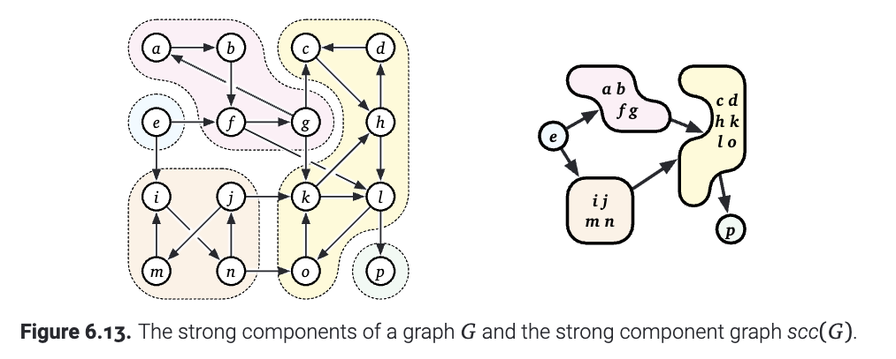

现在, 让我们正式地叙述在有向图中, 连通性是什么意思. 回忆: 在图$G$中, 如果节点$u$可以到达(reach)另一个节点$v$, 并且让$reach(u)$表示$u$可以到达的所有的节点的集合. 现在我们定义: 两个节点$u,v$是强联通的, 当且仅当$u$可以到达$v$, $v$可以到达$u$. 如果这个图里面的任意两个节点都是强联通的, 我们说这个图就是强联通的.
这些繁琐的定义实际上希望做的事情是找到一个和无向图中的"连通性"类似的等价关系. 也就是说, 在图的节点上面定义这样的"强联通"的关系是一个等价关系. 这个关系的等价类被称为$G$的强联通分量(strongly connected components). 等价地说, $G$中的一个强连通分量是$G$中最大的联通子图. 也就是说有向图 $G$ 是强连通的当且仅当 $G$ 恰好有一个强联通分量. 如果我们考虑得极端一些, 如果$G$是有向无环图的话, 只有$G$剩下一个节点的时候, 这个图才是强联通的.
由强联通分量得到的强联通分量图(strong component graph), 通常记作$scc(G)$, 是把$G$中的每一个联通分量缩成一个点, 并且只关心当前的联通分量连向其他的联通分量从而构成的一个图. (如下图) (这样的一个图有时候也叫做这个图经过缩点之后形成的). 不难证明, $scc(G)$肯定是一个DAG. 因此, 至少在原则上, 我们可以对 $G$ 的强分量进行拓扑排序. 也就是说, 可以对顶点进行排序, 只要每一条回边(back edge)在同一个强联通分量里面把两个顶点连接起来.

在 $O(V + E)$ 时间内计算单个顶点 $v$ 的强分量很简单. 首先我们肯定能通过各种手段计算 $reach(v)$, 然后我们通过遍历$G$的反图$rev(G)$计算$reach$的逆: ${reach}^{-1}(v)={u \mid v \in {reach}(u)}$. 最后, $v$的强连通分量就是把二者相交: ${reach}(v) \cap {reach}^{-1}(v)$. 这样一来, 我们就可以在$O(V+E)$的时间里面确定这个图是不是强联通的了.
类似地, 我们可以用这个算法对每个点都做一次.但是, 这样一来, 算法的时间复杂度就变成了$O(VE)$ -- 有$V$个联通分量, 每个都要$E$的时间去把它们找出来. 这个时间复杂度即使是输入图是DAG的时候也是这样! 我们当然可以做得更好, 事实上, 我们只需要$O(V+E)$的事件就可以决定每个节点所属于的强连通分量.